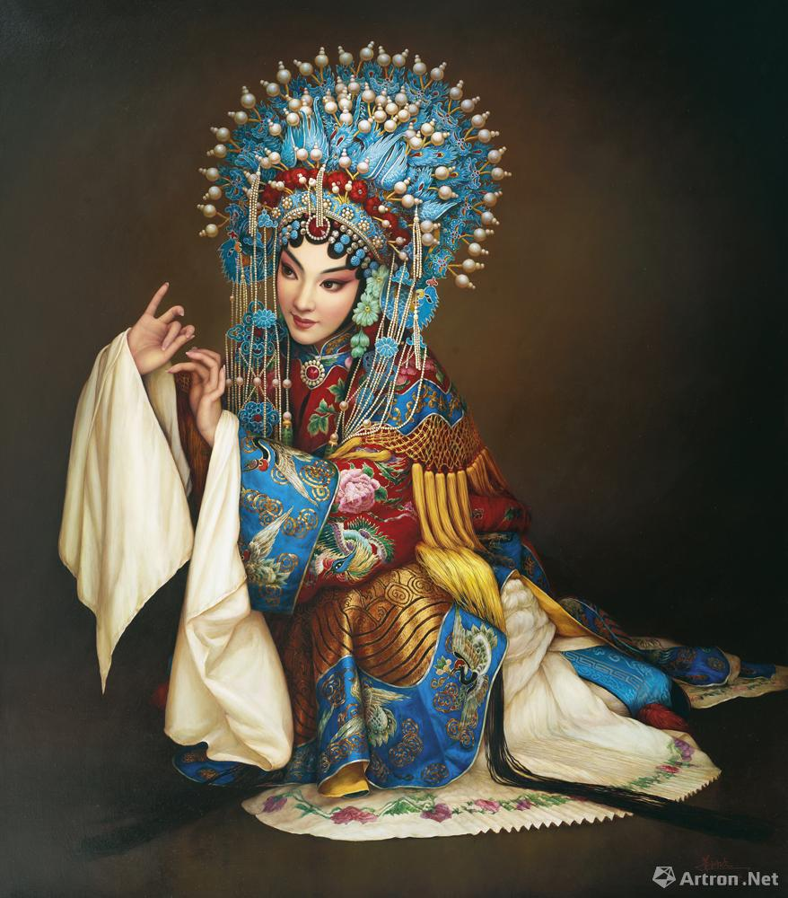

贵妃醉酒

京剧《贵妃醉酒》又名《百花亭》
该剧描写的是杨玉环深受唐明皇的荣宠，本是约唐明皇百花亭赴筵，但久候不至，随后知道他早已转驾西宫，于是羞怒交加，万端愁绪无以排遣，遂命高力士、裴力士添杯奉盏，饮致大醉，后来怅然返宫的一段情节。
《贵妃醉酒》通过动作和唱词、曲调，表达杨贵妃由期盼到失望，再到怨恨的复杂心情。
霸王别姬
《霸王别姬》又名《九里山》《楚汉争》《亡乌江》《乌江恨》《垓下围》《十面埋伏》《乌江自刎》。
该剧目讲述了秦末， 楚汉相争，项羽不听劝告，执意发兵。行至九里山附近时，遭到韩信设下十面埋伏阵，被困于垓下。项羽感到大势已去，便回帐中与虞姬饮酒悲歌。虞姬起舞宽慰，为解除项羽后顾之忧，舞剑后自刎。项羽突围，逃至乌江，觉得无颜去见江东父老，自刎而死